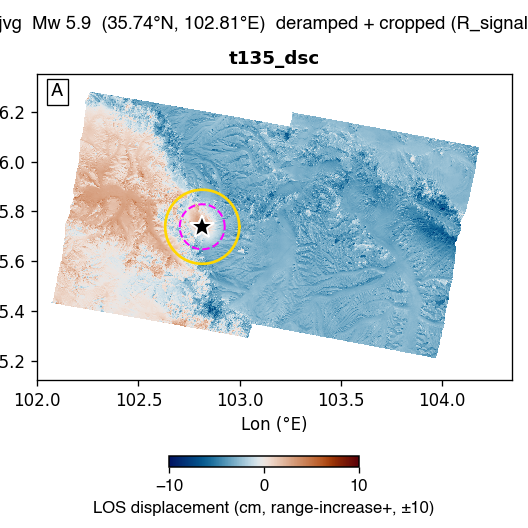

us7000ljvg — Mw 5.9 — GBIS report
Event: 38 km WNW of Linxia Chengguanzhen, China · (35.739°N, 102.815°E, depth 12.0 km)
USGS NP1: strike 156.4° / dip 28.2° / rake 93.1°
USGS NP2: strike 332.8° / dip 61.9° / rake 88.3°
Status: ESCALATED at stage ? — gbis_retry_exhausted. Sections below show whatever the pipeline produced before it stopped; the rest are left blank. See §3 / escalation.md.
1. Raw observations (deramped + cropped)

2. Two-round iterative downsampling (Pass-1 zoned → Pass-2 synth-quadtree)
No subsample_v9_zoned.mat found — run Stage 4 (qsRunFullEvent) first.
3. GBIS inversion result — posterior + diagnostics
| parameter | posterior median | p16 .. p84 | prior bound | USGS NP1 |
|---|
| L (km) | 0.01 | 14.18 .. 15.22 | 4.40 .. 15.39 | — |
| W (km) | 0.01 | 9.75 .. 10.46 | 3.02 .. 10.57 | — |
| Z_top (km) | 0.03 | 26.51 .. 29.32 | 0.10 .. 30.00 | — |
| dip (°) | -45.0 | 37.0 .. 52.6 | 0.1 .. 63.2 | 28.2 |
| strike (°) | 35.5 | 214.2 .. 216.2 | 96.4 .. 216.4 | 156.4 |
| X (km) | 0.00 | 3.38 .. 5.27 | -10.99 .. 10.99 | — |
| Y (km) | 0.01 | 10.51 .. 10.94 | -10.99 .. 10.99 | — |
| SS (m) | -1.855 | +1.692 .. +1.960 | -2.000 .. +2.000 | — |
| DS (m) | +0.265 | -0.320 .. -0.212 | -2.000 .. +2.000 | — |
| |slip| (m) | 1.874 | | — |
| rake (°) | -8.1 | | 93.1 |
| Mw | 6.56 ± 0.03 | | 5.9 |
USGS-convention values shown (dip>0, strike, rake). Red row = posterior median within 2% of a prior bound (railed).
诊断结论: FAIL
acceptance 0.21 (target 0.20–0.45) · ESS 437 (≥500) · Geweke |z| 2.4 (≤2)
VR per track: t135_dsc 0.69 (≥0.50)
未通过项: ESS; stationarity (Geweke); param-at-bound: Strike,Y
4. Beachball comparison
⏳ Not generated — needs the full-mode figure helper. the beachball (full-mode figure helper).
5. Triplet — data / model / residual
⏳ Not generated — needs the full-mode figure helper. the data/model/residual triplet (full-mode figure helper).
6. Joint-posterior corner plot
⏳ Not generated — needs the full-mode figure helper. the corner plot (full-mode figure helper).
7. Burn-in / chain trace
⏳ Not generated — needs the full-mode figure helper. the chain trace (full-mode figure helper).
8. Agent Review (LLM advisory)
Rating: ?
· LLM advisor not invoked
Recommendation: manual_review
Confidence: low
Concerns:- ANTHROPIC_API_KEY not set — to enable LLM advisory, export ANTHROPIC_API_KEY and re-run
Rationale: ANTHROPIC_API_KEY not set — to enable LLM advisory, export ANTHROPIC_API_KEY and re-run
Advisory only. Generated by claude ?
(0 tokens) — not used to drive pipeline actions.